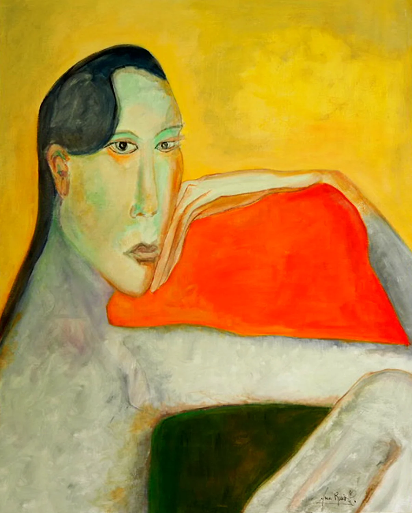
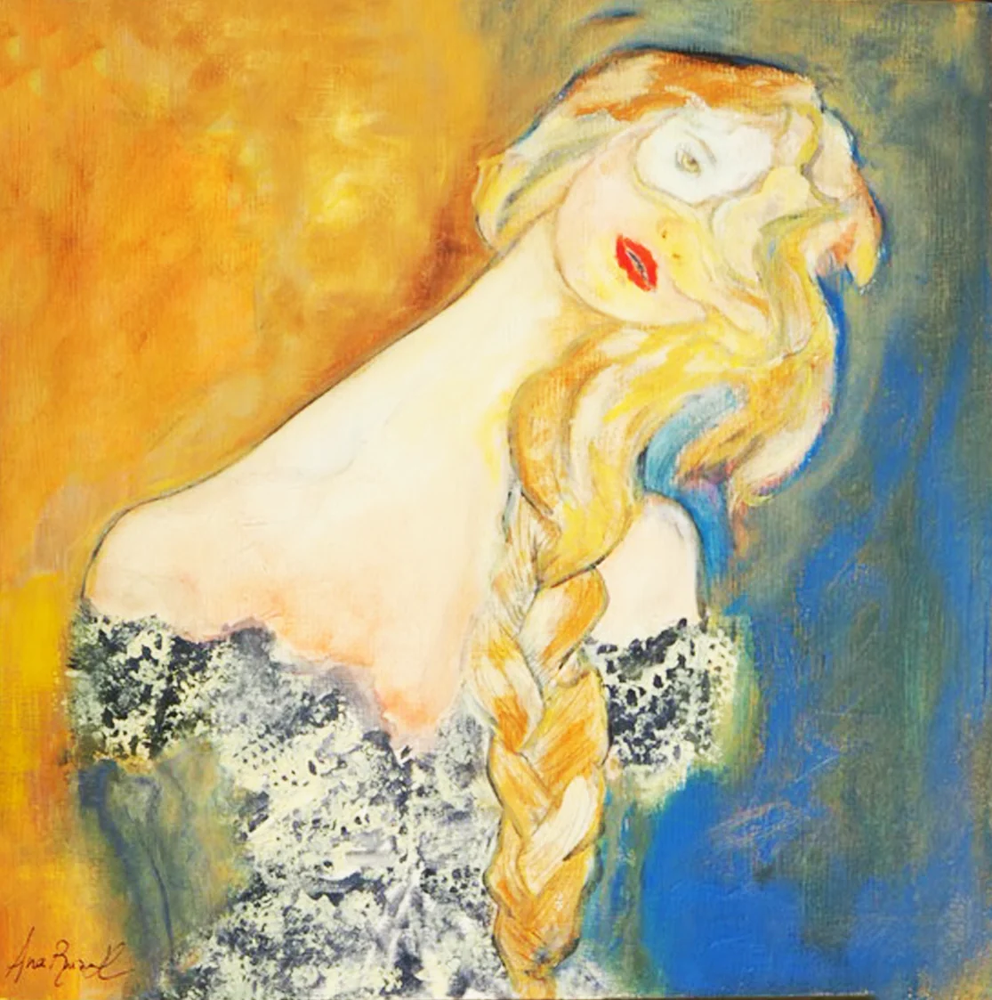
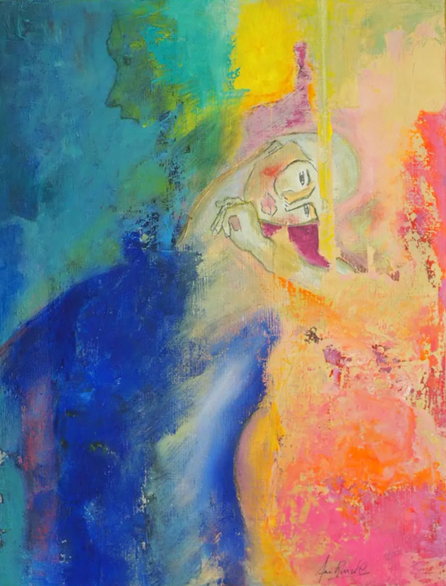
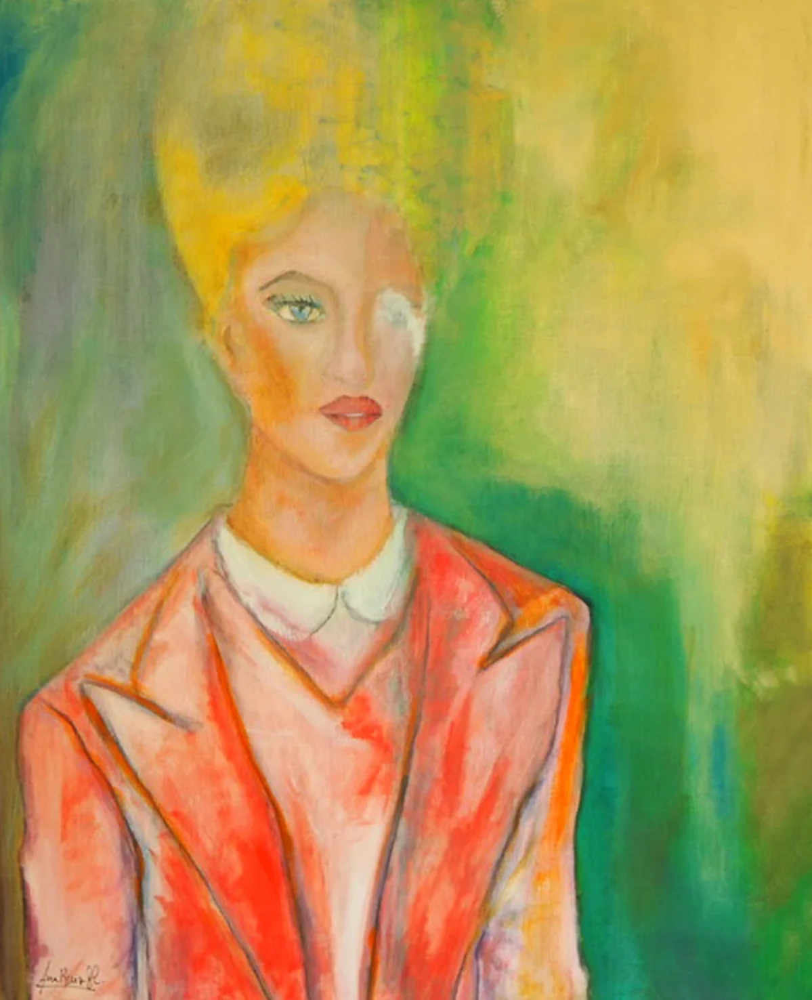
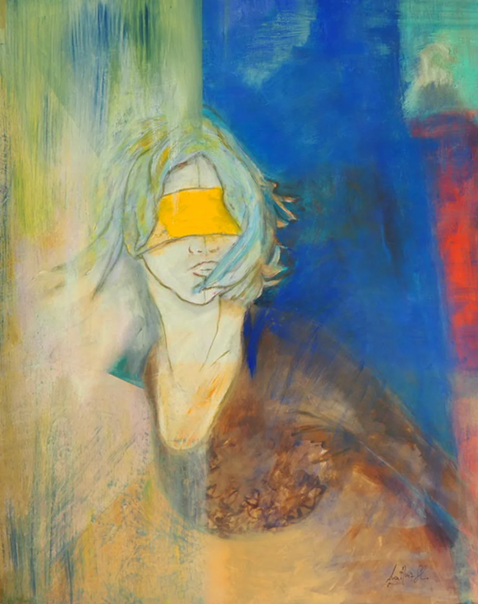

Icône ou le pouvoir de soi (2024)
Presentación de la exposición
Presentada en septiembre de 2024 en la cripta de Orsay, en el marco de la exposición colectiva Géographie(s) du Sacré, « Icône ou le pouvoir de soi » (Icono o el poder de sí) reúne cinco rostros pintados cuyos títulos son otras tantas frases: Iel peut vivre aussi longtemps qu’il veut, Éternel féminin, Et je reprends encore le monde, Iel était si belle que tu n’aurais pas osé l’aimer, Elle ne parle que la langue de son âme.
El rostro se vuelve icono: no una imagen que venerar, sino una presencia que nos mira de frente y afirma su poder sobre sí misma. En continuidad con Peau d’âne, Ana Ruiz prosigue su cartografía de lo íntimo: cada mirada, cada color cuenta una historia de identidad y de libertad.
Rostros




